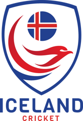

Prototype
for the board of Krikketsamband Íslands · 18 Nov 2026 · by Marina Ermina

A new website for Icelandic cricket
Two homepage layouts to choose from. English and Icelandic.
Layout A
Photo slideshow with a match centre (inspired by the Swedish and Danish cricket websites).
Open →
Layout B
Photo mosaic with news and results side by side (inspired by Cricket Switzerland).
Open →